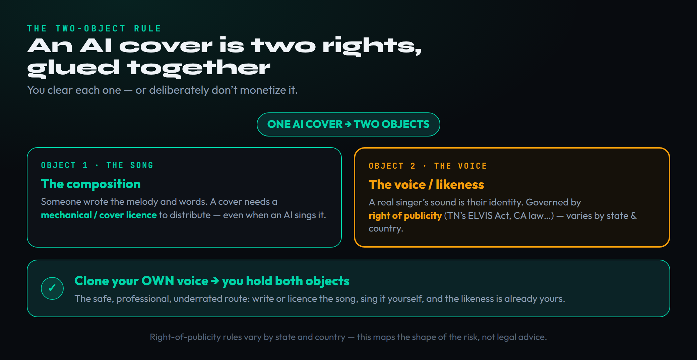
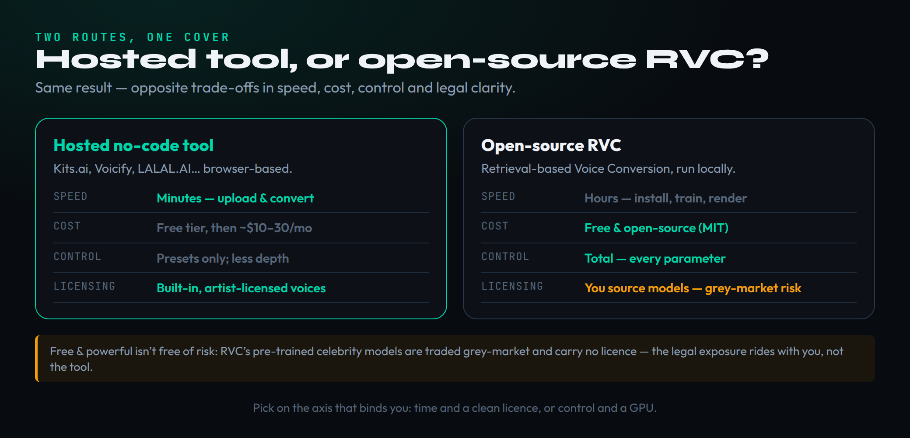
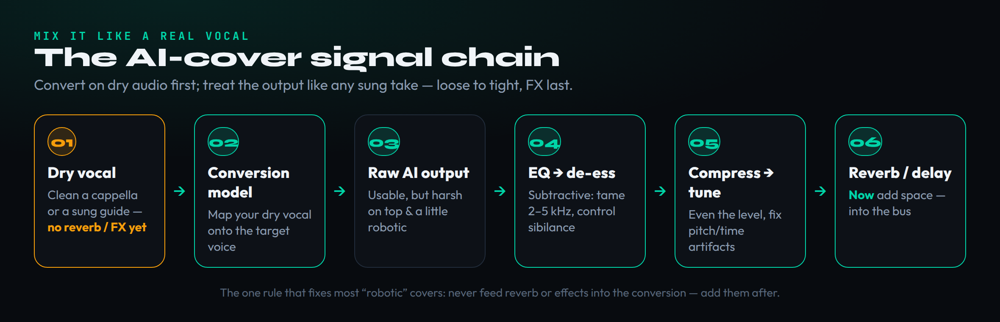

An AI cover is one of the most-watched tricks on the internet right now — a familiar voice singing a song it never recorded — and almost every tutorial teaches you the buttons and waves away everything that matters. The buttons are the easy part. The part nobody teaches honestly is that an AI cover is two separate things glued together: a song that someone wrote, and a voice that belongs to someone. Get one of those wrong and your viral upload becomes a takedown, or worse. This guide teaches the actual workflow — from a clean vocal to a converted, mixed, postable track — and the two-clearance reality underneath it, so you ship something you can actually keep up.
This article links to MPW tools and to third-party platforms, some of which are affiliate links. If you sign up through one we may earn a commission at no cost to you. It changes nothing about the method — the workflow, the honest tradeoffs and the caveats below are reported as they are, click or not.
To make an AI cover: start from a clean, dry vocal (an a cappella, a separated stem, or a guide vocal you sing), pick a route (a hosted tool like Kits.ai for speed and licensed voices, or open-source RVC for free, full control), convert on dry audio with the key matched to the model, then mix the output like a real vocal — subtractive EQ, de-essing, compression, pitch and timing repair, and reverb last. The catch nobody mentions: a cover is two rights — the composition (a cover/mechanical licence) and the voice (right of publicity) — so cloning your own voice on a song you have licensed is the genuinely safe, professional move.
One honesty note before the steps. AI voice tooling and the platform rules around it change almost monthly, so the tool details here were re-verified on June 29, 2026, and the prices and tiers will drift — treat them as a snapshot, not gospel, and confirm inside each app. The legal questions are genuinely unsettled in 2026; this piece does not pretend to resolve them, it points you to the dedicated explainers and keeps the focus on craft and on making informed choices.
What an AI Cover Actually Is — and Three Things People Conflate
Before you touch a tool, it is worth being precise about what an “AI cover” is, because the phrase is used loosely for three different technologies that behave differently, cost differently, and clear differently under the law. Lumping them together is exactly how people end up surprised by a takedown. The thing you almost certainly mean — a recognisable voice singing an existing song — is only one of the three, and it is the one with the most specific recipe.
The first and the one that earns the name is voice conversion: you feed in an existing sung performance and the model re-sings it in a different voice, preserving the original melody, timing, phrasing and emotion while swapping out the timbre. This is what tools like RVC and Kits.ai do, and it is the literal definition of a cover — the same song, a different singer. The model is not inventing the performance; it is transferring it. Everything in this guide is built around this technology specifically, because it is what “make an AI cover” actually means.
The second is full generation — tools like Suno and Udio that turn a text prompt into a whole song from nothing. That is a powerful thing, but it is not a cover; it produces an original (or original-ish) track, with a completely different rights story, and we cover its workflow separately in how to use Suno AI. If you generate a brand-new song and call it a cover, you have confused two different processes. The third is text-to-speech, the ElevenLabs lane: you type words and the model speaks (not sings) them. It is brilliant for producer tags and spoken intros and useless for a melodic cover, because it has no performance to transfer.
Why labour the distinction? Because the route, the inputs and the legal exposure all hinge on it. A voice conversion needs a source performance and a target voice; a generation needs neither; a TTS read needs a script. And as we are about to see, a cover’s two-rights problem only exists because conversion sits on top of an existing song and an existing voice. Keep the three straight and the rest of the workflow falls into place.
An AI Cover Is Two Rights, Glued Together
Here is the thesis the button-pushing guides skip, and it is the single most important thing on this page: a finished AI cover is two separate legal objects stuck together, and you have to clear — or deliberately not monetise — each one independently. The first object is the composition: the melody and lyrics that some songwriter and publisher own. The second is the voice: a real person’s vocal identity. They are governed by completely different bodies of law, and satisfying one does nothing for the other. Most takedowns happen because someone cleared one object, or neither, and assumed that was the whole story.

Take the composition first. When you cover a copyrighted song — whoever or whatever sings it — you generally need a mechanical or “cover” licence to distribute it, because you are reproducing someone else’s underlying work. That is true of a human cover band and it is equally true of an AI conversion; the technology that produced the vocal does not change the fact that the song belongs to someone. This is ordinary music-licensing territory, the same ground you would walk for any cover or remix, and we lay it out in music copyright and fair use and how to legally release a remix. The encouraging part is that it is a solved problem — cover licences exist and are routine.
The voice is the newer and messier object. Imitating a real, identifiable artist’s voice runs into the right of publicity — a person’s right to control the commercial use of their identity, which several states have recently extended to explicitly cover AI-generated voice replicas. Tennessee’s ELVIS Act, in force since mid-2024, was the first to add a simulated voice to that protection and even reaches the tools whose main purpose is unauthorised replication; California and other states have layered on their own statutes, while a federal law (the proposed NO FAKES Act) is still circulating but not passed as of 2026. The result is a patchwork, not a clean rule, and the high-profile “fake Drake” track that kicked off this whole debate is the cautionary tale. The deep dive lives in is AI voice cloning legal; the takeaway here is that imitating someone else’s voice is the object most likely to get you into trouble.
So the practical rule that falls out of the two-object model is simple: for each object, either clear it or do not monetise it. License the song; use a voice you are entitled to use. And the cleanest way to satisfy the second object entirely is the one the next section is about — use the one voice you already own.
This guide maps the shape of the rights and risks so you can make informed choices — it is not legal advice, the law is unsettled and varies by state and country, and you should consult a qualified professional before you monetise a cover. For the detail, see our explainers on whether AI voice cloning is legal and music copyright and fair use.
Your Own Voice vs Someone Else’s: The Honest Split
The two-object model splits every AI cover into a safe lane and a risky one, and being honest about which is which is the whole point of this guide. When you clone your own voice, you already hold the likeness object — nobody can claim you imitated them, because it is you — so the only thing left to clear is the composition. That is why cloning your own voice is the underrated professional move: it is the lane where the law is on your side, and it unlocks genuinely useful production work like stacking harmonies, doubling a lead, building quick demos in your own voice, or extending your range upward and downward without straining.
The other lane — training or borrowing a model of a real, recognisable artist so they appear to sing something they never touched — is the one that goes viral, and it is also the one platforms pull and lawyers write about. It can be done, and people do it constantly, but it sits squarely on the contested voice object, it usually cannot be monetised cleanly, and the rules are tightening rather than loosening. We are not going to pretend that use does not exist; we are going to be straight that it is the fraught one, and that “it’s everywhere on TikTok” is not the same as “it’s cleared.”
There is a sensible middle ground that often gets missed. Some hosted platforms maintain libraries of licensed artist and session voices — voices whose owners consented and are compensated — which lets you sing in a voice that is not yours and not a rights violation, because the platform did the clearing. Kits.ai built its business on exactly this ethically-licensed model, paying the artists whose voices it distributes rather than scraping them. If your goal is “a voice that is not mine, released commercially,” a licensed library is the clean path; a grey-market celebrity model from a community Discord is not.
So the honest split is this: your own voice is safe and pro; a licensed library voice is clean and commercial; an unlicensed clone of a real artist is the viral, risky one. Decide which lane you are in before you start, because it changes which route, which model, and which platform make sense for the rest of the workflow.
Gather Your Inputs: A Clean, Dry Vocal
Voice conversion is only ever as good as the vocal you feed it, and this is where most amateur covers are quietly lost before any setting is touched. The model needs a clean, dry, isolated vocal — just the voice, with no instrumental behind it and no reverb, delay or effects on it. Garbage in, garbage out is not a cliché here; it is literal. A vocal that is smeared with reverb or bleeding into a beat produces a smeared, artifacted, robotic-sounding conversion, and no amount of clever settings downstream will fully rescue it.
You have three honest ways to get that clean input. The best, if you can find it, is a real a cappella — an official isolated vocal of the song you are covering. The second, when you only have a finished stereo mix, is to separate the vocal yourself with an AI stem-separation tool; modern separation is genuinely good but not perfect, so expect a little bleed and a few artifacts, and clean them before converting. Our AI stem separation guide walks through the tools and how clean the splits actually get. The third, and the one that sidesteps half the rights problem, is to sing the guide vocal yourself.
If you are singing your own guide, record it the way you would record any serious vocal: a quiet room, a close mic, a consistent distance, and crucially no effects on the way in — print it bone dry. Our guide to recording vocals in a home studio covers the room and signal-chain basics. A dry, well-sung guide gives the conversion clean phrasing and timing to transfer, which is most of what makes a cover feel like a performance rather than a karaoke machine.
Whichever input you use, hold one rule above the rest, because it is the one this whole craft turns on: the vocal you convert must be dry. Strip any reverb, delay, doubling or saturation before conversion. Effects belong at the end, after the voice has been swapped, for the simple reason that the model will otherwise treat the reverb tail as part of the voice and bake an unfixable smear into the output. We will come back to this rule twice more, because almost every “why does mine sound robotic” question traces back to ignoring it.
Pick Your Route: Hosted Tool or Open-Source RVC
There are two real ways to actually perform the conversion, and they are opposite trades. One is a hosted, no-code tool you run in a browser; the other is open-source software you install and run yourself. Neither is “better” in the abstract — they bind you in different places, and the right pick depends on whether your scarce resource is time, money, control, or a clean licence.

The hosted no-code route — Kits.ai is the best-known, with Voicify, LALAL.AI and others alongside it — is the fast path. You upload your dry vocal, pick a voice, and convert, all in a browser with nothing to install. Kits.ai in particular leans on an ethically-licensed artist-voice library and supports cloning your own voice, which makes it one of the cleaner options for commercial release. Be honest about the limits, though: as of 2026 its free tier gives you a small allowance of conversion minutes but gates downloads, paid plans run from around ten to thirty dollars a month, and reviews are mixed — the voices can sound synthetic on some material, and the platform has steadily moved features behind paywalls. Try the free tier on your own audio before you pay, because if the voice sounds robotic on your material, a subscription will not fix it.
The open-source route is RVC — Retrieval-based Voice Conversion, free and MIT-licensed, the engine behind a huge share of the AI covers you hear. It gives you total control over every parameter and costs nothing in licence fees, but it asks for a real NVIDIA GPU (or a Google Colab / Hugging Face session if you lack one), an hour or so of setup, and a willingness to manage models yourself. You can train a model from as little as five to ten minutes of clean target audio. The catch is the one the diagram flags in amber: the pre-trained celebrity models shared in community repositories carry no licence, so the legal and ethical exposure of using them sits with you, not with the free software.
How to choose, in one line: if your scarce resource is time and a clean licence, use a hosted tool with your own or a licensed voice; if it is control and you already have a GPU, use RVC. For most producers making their first cover — especially of their own voice or a licensed one — a hosted tool is the faster, cleaner start, and you can graduate to RVC later when you want more control than presets allow.
The Conversion Workflow, Step by Step
The mechanics are similar whichever route you chose, because both are doing the same job: take your dry vocal, map it onto a target voice model, and render the result. What follows is the shape of the process; the exact buttons differ between Kits.ai’s web interface and an RVC WebUI, but the decisions are the same, and understanding the decisions is what separates a clean conversion from a noisy one.
- Upload the dry vocal. Feed in the clean, effect-free vocal you prepared. If the tool offers built-in separation or de-reverb, you can use it, but a vocal you cleaned yourself is almost always better.
- Choose or clone the target voice. Pick a voice from the library, or upload training audio to clone one (your own, ideally). On RVC this means loading a
.pthmodel and its index file. - Set the pitch and convert. Tell the model how far to transpose so your vocal lands in the target voice’s natural range — this single setting fixes most “chipmunk” or “growl” results — then run the conversion and listen.
- Iterate, then bounce. Adjust pitch, the retrieval/index ratio and any formant control, re-run until the artifacts are minimal, and export the raw converted vocal as a high-quality WAV. This raw output is your starting point, not your finished file.
Two of those steps deserve a companion thought, because they are where conversions go wrong. The pitch / transpose setting matters more than any other: a voice model has a comfortable range, and if your guide sits an octave away from it the output will sound unnatural no matter how good the model is. Transpose your input so it lands in the model’s sweet spot, and convert there. The index or retrieval ratio is the second dial worth understanding — it controls how strongly the model leans on the target voice’s character versus your input’s articulation; push it too high and you get the target’s timbre but mushy diction, too low and you barely hear the target at all. Find the balance by ear on a short phrase before you render the whole song.
And the rule again, because it lives at this stage too: the file you upload to convert must be dry. If you only remember one thing from this guide, remember that effects go on after the conversion, never before. With the raw converted vocal bounced, the job stops being “AI” and becomes ordinary production — which is good news, because that is a problem you already know how to solve.
Make It Sound Real, Not Robotic
A raw conversion almost never sounds finished. It tends to be a little harsh on top, slightly synthetic in the consonants, and occasionally glitchy on held notes or breaths — the tells that make listeners say “that’s AI.” The good news is that every one of those is a known, fixable problem, and fixing them is the difference between a meme and a record. There are four moves, and they happen before you even open a mixer.
First and most important, you already did it: you converted on dry audio. This is the rule restated because it is the single biggest cause of robotic output. A model fed reverb treats the tail as part of the voice and prints an artifact you cannot remove; a model fed a clean dry vocal has a clean voice to work with. Second, match the key and range. We covered transposing into the model’s comfortable range during conversion, but it is worth re-checking here — if a section still sounds strained or thin, the input is probably sitting at the edge of the model’s range, and a small pitch adjustment on that section will relax it.
Third, fix formants where the size or gender of the target voice does not match your input. Most tools expose a formant-shift control; nudging it can turn an uncanny, “wrong-sized” vocal into a believable one without changing the pitch. It is a subtle dial, so move it in small steps and compare. Fourth, repair the artifacts — the clicks, the glitchy breaths, the smeared consonants. Comp the best take from a couple of conversion runs, edit out the obvious glitches, and gently retune or retime anything the model wandered on. This is exactly the editing you would do on a real vocal comp; the AI just gave you the raw takes.
Do these four and the conversion stops fighting you. What is left is a vocal that behaves like any other recorded vocal — a little raw, a little harsh, but honest material ready for a mix. Which is precisely where it goes next.
Mix the AI Vocal Like a Real Vocal
Here is the reframe that makes the whole back half of this easy: once it is converted and cleaned, an AI vocal is just a vocal. Every instinct and chain you would use on a sung take applies unchanged, and your DAW’s stock plugins are entirely enough. The only thing to keep in mind is that AI conversions tend to arrive slightly harsh and slightly sibilant, so the chain leans subtractive first — you are mostly removing problems, not adding polish, until the very end.

Work the chain left to right, loose to tight. Start with subtractive EQ: high-pass away any rumble, then sweep for the glassy, fatiguing band that AI vocals love to park in — usually somewhere in the 2 to 5 kHz region — and cut it a couple of dB, preferably with a dynamic EQ that only acts on the spikes. Follow with de-essing to control the sibilance the conversion tends to exaggerate. Our how to mix vocals guide covers the full chain, the de-esser entry in the Bible explains the tool, and our vocal chain builder can lay out a starting chain for you.
Next comes compression to even out the level so the vocal sits consistently in the track, followed by any pitch and timing repair the conversion still needs — tighten stray notes and align the phrasing, leaning on a reference like our pitch-correction reference if you are unsure how hard to push it. Only now, with the voice clean and controlled, do you add space: reverb and delay, last in the chain, to place the vocal in a believable room. Our guide to using vocal effects covers how to do this tastefully. Adding reverb here, at the end, is the whole reason we insisted on a dry input at the start — you keep complete control of the space because you, not the model, decided on it.
That is the entire mix: remove the harshness and sibilance, control the dynamics, fix the pitch, then place it in a space. Nothing exotic, no secret plugin — just the ordinary craft of vocal mixing applied to a vocal that happens to have come from a model instead of a microphone. Get this right and the “AI” tell disappears, because what people hear is a well-mixed voice.
Clone Your Own Voice Properly
If the safe, professional lane is cloning your own voice, then it is worth doing it well, because a good personal voice model is a tool you will reuse on every project — for harmonies, doubles, demos and range extension — long after this one cover is done. The quality of that model is decided almost entirely by the dataset you train it on, not by any clever setting, so this is where to spend your care.
A good dataset is clean, dry, consistent and varied. Record several minutes of your voice — more is better, and hosted tools can start from surprisingly little while a robust model wants ten minutes or more — in a quiet room, on the same microphone at the same distance throughout, with absolutely no reverb or effects printed. Cover your full range: sing low and high, loud and soft, sustained notes and quick phrasing, so the model learns how your voice behaves everywhere rather than in one narrow band. Consistency of capture and variety of performance are not in tension; you want the conditions identical and the content diverse.
The common mistakes are predictable and worth naming. Training on a noisy or reverberant dataset teaches the model your room instead of your voice; training on too narrow a range gives you a model that sounds great on one phrase and falls apart on the next; training on processed audio bakes the processing into the clone permanently. Strip it all back to a dry, clean, full-range capture and the model will reward you. If you want the full recording discipline behind a clean capture, our home-studio vocal recording guide is the companion piece.
Once you have a solid personal model, the creative uses open up fast. Stack three conversions of a line for an instant harmony group; double your own lead to thicken it; sketch a topline in your own voice before you can sing it cleanly; reach a note that is currently outside your range. None of it raises a rights question, because the voice is yours — which is exactly why this is the lane worth investing in.
Where You Can — and Can’t — Post It
This is the section that decides whether your cover survives contact with the internet, and it carries a hard truth: platform policy, not the law alone, is the binding gate, and it shifts roughly every quarter. Something can be arguably legal and still get pulled because a platform’s terms forbid it; something can clear a platform today and trip a new rule next month. So the durable skill is not memorising the current rules — it is knowing to check each platform before every release, and understanding the shape of what they are policing.
On streaming and distribution, the pattern in 2026 is consistent even as the details move. Spotify’s impersonation policy allows a real artist’s voice only with that artist’s authorisation, and an industry-wide push (via DDEX) now lets you disclose AI involvement in the credits; Apple Music tags AI use and quietly keeps it out of editorial playlists; Deezer demonetises fully-AI tracks tied to fraud. Distributors diverge sharply — CD Baby refuses fully-AI material outright, others have restricted or banned it, and the ones that accept it require that you own the rights and disclose AI use honestly, on pain of having your whole account pulled. An own-voice cover of a licensed song, disclosed truthfully, is the clean case; our how to release AI music walks the compliant path and is AI music legal covers the wider weather.
YouTube deserves its own warning, because it is the strictest of the big platforms on AI voices. Its systems are aggressive enough that even a voice that merely resembles a known artist — not an exact clone — can trigger a takedown or a Content ID dispute, and a covered composition can collide with the original rights-holder’s claim regardless of the voice. The practical advice that follows: do not enable Content ID on a cover (you do not own the composition), expect monetisation channels like Content ID, TikTok and Meta to be the first to restrict AI material, and treat a celebrity-voice upload as something that can vanish at any time.
On monetisation, the two-object model returns one last time. To earn from a cover cleanly you need both objects handled — the composition licensed and the voice one you are entitled to use — plus honest disclosure wherever the platform asks for it. The human work you add (your arrangement, your mix, your own singing) is also the part that can carry authorship, which is why your-own-voice covers are the ones that can actually become a monetisable catalogue; the details are in can you copyright AI music and how to make money with AI music. Clear both objects, disclose honestly, and you have a cover you can post, keep up, and stand behind.
Make Your First Cover: 3 Exercises
- Pick a song you have the right to cover (public-domain, your own, or one you have licensed) and record a dry guide vocal — close mic, quiet room, no effects.
- Run it through a hosted tool’s free tier, choosing a licensed library voice, and transpose so your guide lands in that voice’s comfortable range.
- Bounce the raw conversion and just listen for the tells — harshness, sibilance, glitches — without fixing anything yet. Name what you hear.
- Take one dry vocal and make a second copy with reverb and delay printed onto it.
- Convert both through the same voice model with identical settings.
- Compare the outputs side by side and write down exactly how the wet-input version degraded. This is the lesson that makes the dry-input rule stick for good.
- Record a clean, dry, full-range dataset of your own voice and train a personal model (hosted or RVC).
- Convert your guide with it, then run the full mix chain — subtractive EQ, de-ess, compression, pitch and timing repair, reverb last — until the AI tell is gone.
- Document every step you took (song licence, voice = yours, tools, mix decisions) in one file as your provenance and authorship record before you consider posting it.
Frequently Asked Questions
It depends on whose voice and whose song. An AI cover is really two rights stacked together: the underlying composition (the melody and lyrics someone wrote) and the voice or likeness being imitated. Covering a copyrighted song generally needs a mechanical or cover licence even when an AI sings it, and imitating a real artist's voice can run into right-of-publicity laws such as Tennessee's ELVIS Act and similar state statutes. Cloning your own voice to sing a song you have licensed is the cleanest case. None of this is legal advice - it is the shape of the risk - so check our dedicated explainers and a professional before you monetise.
Yes, technically. Open-source RVC (Retrieval-based Voice Conversion) is free and MIT-licensed, and hosted tools like Kits.ai have free tiers. But free hides costs: RVC needs an NVIDIA GPU (or a Google Colab or Hugging Face session) and an hour of setup, and hosted free tiers usually cap conversion minutes and lock downloads behind a paid plan. The bigger hidden cost is legal - the free pre-trained celebrity voice models traded in communities carry no licence, and that exposure rides with you, not the tool.
They solve different problems. Kits.ai (and similar hosted tools) is faster, runs in a browser, and ships an ethically-licensed artist-voice library plus your-own-voice cloning, which makes commercial release cleaner - though quality varies by source material and the free tier is download-limited. RVC gives you total control and is free, but you install it, train or download models, and accept that model licensing is on you. Pick hosted if you value speed and a clean licence; pick RVC if you value control and already have a GPU.
Three moves fix most of it. First, convert on dry, clean audio - never feed reverb, delay or effects into the model, because it bakes the artifacts in; add space afterwards. Second, convert in the voice model's comfortable range and match the key, pitching your guide vocal if needed. Third, mix the output like a real vocal: subtractive EQ to tame the 2 to 5 kHz harshness, de-essing, gentle compression, then any pitch or timing repair, and only then reverb and delay.
Yes, and it is the underrated professional move. Cloning your own voice means you already hold the likeness, so you sidestep the thorniest rights questions, and it is genuinely useful for stacking harmonies, doubling a lead, building demos, or extending your range. Quality comes from the dataset: feed the model several minutes of clean, dry, consistently-recorded audio that covers your full range, with no reverb or background noise. More good data beats a clever setting every time.
You need a dry, isolated vocal - either a true a cappella or a guide vocal you sing yourself. Conversion is only as faithful as its input: a vocal smeared with reverb or buried under a beat produces a smeared, artifacted clone. If all you have is a finished stereo track, run it through a stem-separation tool first to pull the vocal out, accepting some bleed and artifacts, then clean it before you convert.
Platform policy - not the law alone - is the binding gate, and it shifts often. As of 2026 Spotify only allows vocal impersonation of a real artist with that artist's authorisation, distributors like CD Baby block fully-AI tracks while others require you to own the rights and disclose AI use, and YouTube is strict enough that even voice-style similarity can trigger a takedown or Content ID dispute. An own-voice cover of a song you have licensed, disclosed honestly, is the postable case; an unlicensed celebrity impression is the one that gets pulled.
Partly, and only the human parts. Under the current US human-authorship standard a purely AI-generated element is not registrable, but the composition you wrote or licensed, the arrangement, the mix decisions and any singing you actually did are yours and can carry authorship. The more of your own creative work you layer on - your own voice, your own arrangement, your own production - the more the track is genuinely yours, in both the legal and the artistic sense. This area is unsettled in 2026, so we defer specifics to our dedicated copyright explainers.